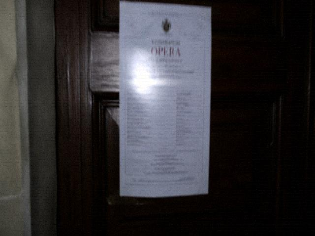

Lookup for sold packages. Enter a ticket number or the purchase phone. What you get is the order, not a refund.
A sample ticket number is on the ticket page. Do not guess other people's. Guessed numbers still do not open refunds.
The Backstage booking tab remains frozen. Frozen means guests forbidden, not that the system is broken.
Ticket number / phone
Ticketing back office
Ticket-lookup internal note. County Information Center built the form in 2009 for hospital registration. Tourism reused it in 2012 for package lookup. The person who reused it swapped clinic no. for ticket number. The password box was not swapped. Still the same dots. What goes in the dots is not a password. It is a ticket number or a phone. Do not treat it as a password.
Lookup for sold packages. What you get is the order, not a refund. A sample ticket number is on the ticket page. Do not guess other people's. Guessed numbers still do not open refunds. The Backstage booking tab remains frozen. Frozen means guests forbidden, not that the system is broken. That button came with the template. It still displays. Click it and there is no interface. No interface, do not keep clicking. Extra clicks fill the log with empty submits. Empty submits, WuChuang gets asked. Successful lookup jumps to the order page. Failed red text is one sentence. The sentence is hard-coded. Do not ask Information Center to make it politer. Polite, and people think they can refund. This page does not verify ID cards. No verify was for speed that year. Speed means a matching number can see its own order. Seeing an order is not a strike. Strike is not behind this door. Behind this door is the order. Behind the order is the DutyBook transcript. The transcript needs permission to pull. Permission is not something you click out yourself. Cannot click it out, go back to the ticket page. The ticket-page button is grey. Grey is correct. This page still works in IE8. IE6 submits empty. Empty, and the red text does not appear. Do not take that as a pass. It did not pass. The yellow-edge Dell at the town internet cafe cannot hit the button. Do not look up tickets at the cafe. Look up someone else's number and it is still not your order. Do not screenshot it out. Failed red text is hard-coded. Information Center will not change it. One change needs a county work order. Nobody signs the work order. Fill a ticket number in the dots. Then click Lookup. If it does not jump, it is not this door's business.